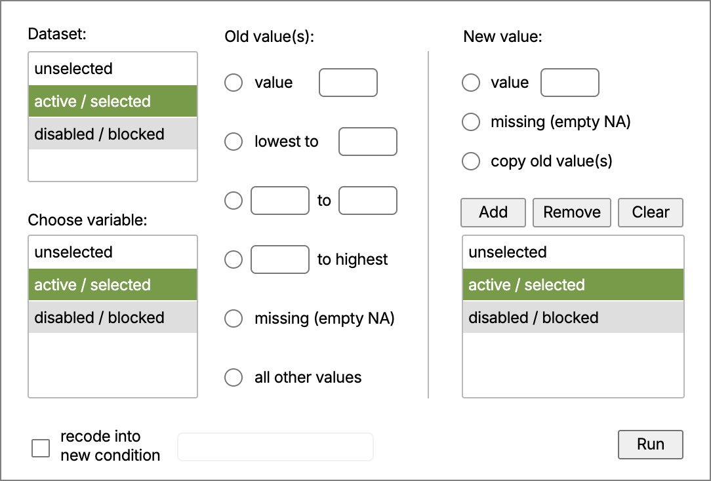
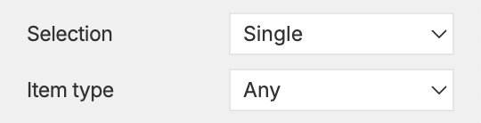
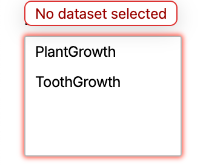
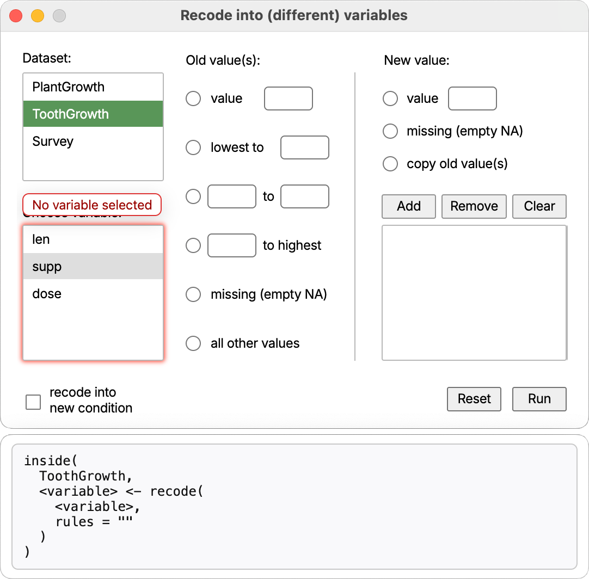
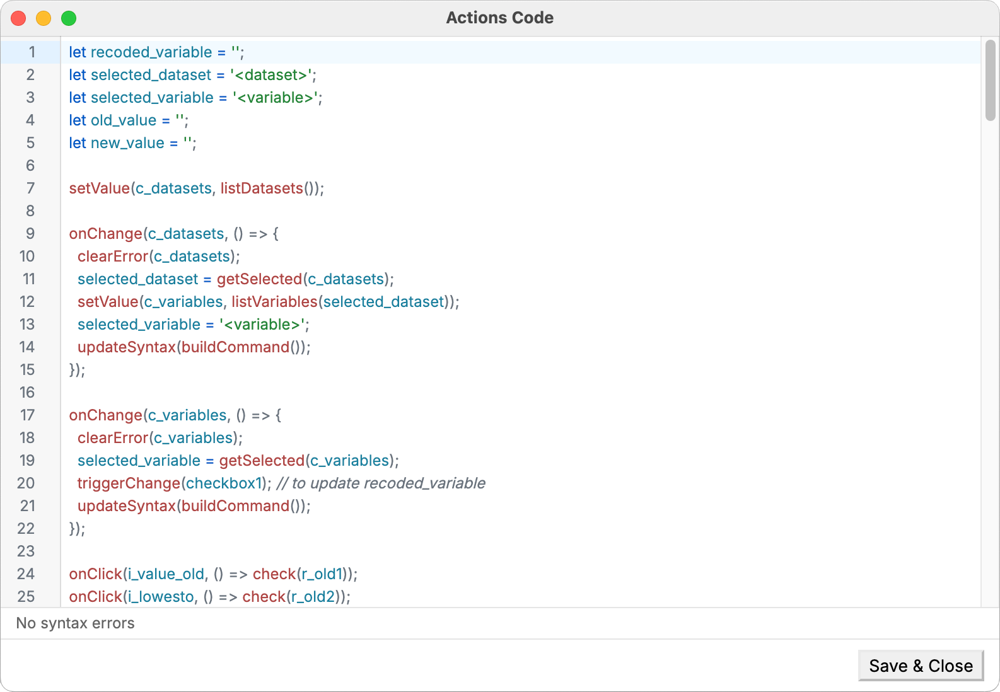

Contents
Dialog Creator — API Reference
Use this reference when writing custom JavaScript for Dialog Creator. It contains information about window helpers, event utilities, and data APIs available in the preview runtime.
Scripting API — reference
showMessage(message, detail?, type?)
- Shows an application message dialog via the host app.
- message is the visible header; detail is the body text; type (optional) controls icon: 'info' | 'warning' | 'error' | 'question'.
- Examples:
showMessage('Hello')showMessage('Low disk space', 'Please free up 1GB', 'warning')showMessage('Save failed', 'The dialog failed to save your changes.', 'error')
getValue(name)
- Get the element's value/text.
- Input/Label/Select/Counter return their current value; Checkbox/Radio return their current boolean state.
- Returns
nullif the element doesn't exist.
setValue(name, value)
- Set the value/text.
- Input/Label: set string; Counter: set number within its min/max; Select: set selected option by value; Checkbox/Radio: set boolean state.
- No-op if the element doesn't exist. Does not dispatch events automatically.
isChecked(name)
- For Checkbox/Radio, returns the live checked/selected state as a boolean.
check(name) / uncheck(name)
- Convenience methods for Checkbox and Radio elements to set on/off.
- For Radio,
check(name)also unselects other radios in the same group. - These do not dispatch events by themselves; for the handlers to run, use
triggerChange()ortriggerClick().
getSelected(name)
- Read the current selection(s) as an array of values.
- For Select, returns a single-item array (or empty array if nothing selected).
- For Container, returns labels of all selected rows.
isVisible(name): boolean
- Returns whether the element is currently visible (display not set to 'none').
isHidden(name): boolean
- Logical complement of
isVisible(name).
isEnabled(name): boolean
- Returns whether the element is currently enabled (not marked as disabled).
isDisabled(name): boolean
- Logical complement of
isEnabled(name).
show(name, on = true)
- Show or hide by boolean. Use
show(name, true)to show;show(name, false)to hide.
hide(name, on = true)
- Convenience inverse of show:
hide(name)hides,hide(name, false)shows. Internally callsshow(name, !on).
enable(name, on = true)
- Enable or disable by boolean. Use
enable(name, true)to enable;enable(name, false)to disable.
disable(name, on = true)
- Convenience inverse of enable:
disable(name)disables,disable(name, false)enables. Internally callsenable(name, !on).
onClick(name, handler)
- Shortcut for
on(name, 'click', handler).
onChange(name, handler)
- Shortcut for
on(name, 'change', handler).
onInput(name, handler)
- Shortcut for
on(name, 'input', handler).
setSelected(name, value)
- Programmatically set selection.
- For Select elements: sets the selected option by value (single-choice).
- For Container elements: accepts a string or array of strings and replaces the current selection with exactly those labels.
- Does not dispatch a
changeevent automatically. For the handlers to run, calltriggerChange(name)after changing selection. - Throws a SyntaxError if the element doesn't exist, the control is missing, the option/row is not found, or the element type doesn't support selection.
clearContent(element)
- Clears the content/value of supported elements.
- Supported: Input (clears the text), Container (removes all rows).
- Throws an error if used on unsupported types.
setLabel(name, label)
- Set the visible label text of a Button element.
- Throws a SyntaxError if the element doesn't exist or isn't a Button.
changeValue(name, oldValue, newValue)
- Rename a specific item within a Container from
oldValuetonewValue. - If the item is currently selected, the container's selection mirror is updated accordingly.
- No event is dispatched automatically; call
triggerChange(name)for the change handlers to run. - Throws a SyntaxError if the element doesn't exist or isn't a Container.
updateSyntax(command)
- Updates the Syntax Panel with the provided command string. The panel remains open alongside the Preview window and mirrors its width; closing either window also closes the other.
- Content is rendered with preserved whitespace/line breaks in a monospace font.
- If the floating Syntax Panel cannot be created, a fallback inline panel appears immediately below the Preview canvas inside the Preview window.
- Example:
const sel = getSelected(radiogroup1);
const cmd = buildCommand(sel);
updateSyntax(cmd);
run(command)
- Sends the specified command to the backend for execution (for instance to run the R code, if running on top of R).
Validation and highlight helpers
addError(name, message)
- Show a tooltip-like validation message attached to the element and apply a visual highlight (glow). Multiple distinct messages on the same element are de-duplicated and the first one is shown. The highlight is removed automatically when all messages are cleared.
clearError(name, message?)
- Clear a previously added validation message. If
messageis provided, only that message is removed; otherwise, all messages for the element are cleared.
Backend helpers (in the developer's responsibility)
listDatasets()
- Returns an array of dataset names available in the backend environment (e.g., R).
listVariables(dataset)
- Returns an array of variable names available in the specified dataset, as well as their types.
Element-specific details
Input
- Read:
getValue(myInput): returns a string - Write:
setValue(myInput, 'hello') - Events: 'change' (on blur) or 'input' (as you type)
- Read:
Label
- Read:
getValue(myLabel): returns a string - Write:
setValue(myLabel, 'New text')
- Read:
Select
- Read:
getValue(mySelect): returns a string - Write:
setValue(mySelect, 'RO') - Event: 'change'
- Read:
Checkbox
- Read state:
isChecked(myCheckbox): returns a boolean - Write state:
check(myCheckbox)anduncheck(myCheckbox) - Event: 'click'
- Read state:
Radio
- Read state:
isChecked(myRadio): returns a boolean - Write state:
check(myRadio)anduncheck(myRadio) - Event: 'click'
- Read state:
Counter
- Set value within its min/max:
setValue(myCounter, 7) - Read current number:
getValue(myCounter)
- Set value within its min/max:
Button
- Pressed feedback is built-in in Preview; the handler can trigger other UI changes.
- Event: 'click'
Slider
- Dragging is supported in Preview, and sliders react to changes.
Practical patterns
- Conditional show a panel when a checkbox is checked:
onClick(myCheckbox, () => {
show(myPanel, isChecked(myCheckbox));
// or: hide(myPanel, isUnchecked(myCheckbox))
});
- Mirror an input's text to a label on change:
onChange(myInput, () => setValue(myLabel, getValue(myInput)));
- Select a value in a Select (no auto-dispatch), then notify listeners:
setSelected(countrySelect, "RO");
triggerChange(countrySelect);
- Conditional enable/disable situations:
onClick(lockCheckbox, () => {
disable(saveBtn, isChecked(lockCheckbox)); // disable when locked
// Equivalent forms:
// enable(saveBtn, isUnchecked(lockCheckbox));
// Unconditional forms:
// enable(saveBtn); // just enable
// disable(saveBtn); // just disable
});
- Replace a Container's selection (multi-select) and notify listeners:
setSelected(variablesContainer, ["Sepal.Width"]);
triggerChange(variablesContainer);
- Add or remove items in a Container:
addValue(variablesContainer, "Sepal.Length");
clearValue(variablesContainer, "Sepal.Width");
- Update a Button label and rename a Container item:
setLabel(runBtn, "Run Analysis");
changeValue(variablesContainer, "Sepal.Length", "Sepal Len");
Notes
- Programmatic state changes (e.g.,
check,setValue) do not automatically dispatch events. UsetriggerChange()ortriggerClick()if the dialog should behave as if the user had interacted with the element. - The selection command (
setSelected) also does not auto-dispatch, but it can be paired withtriggerChange(name)to trigger a change event. - Validation helpers (
addError,clearError) are purely visual aids in Preview; they do not block execution or change element values.
Case study: recode variables dialog
The following section exemplifies, using a step by step approach, how to build a dialog that allows users to recode a variable in the R language. It shows how to construct the dialog in the editor area, and what actions are needed in the scripting area to make it functional and responsive.
Similar to any other recoding dialog, the user needs to first select a dataset from a list, then choose a variable from that dataset to recode, and finally specify the recoding rules.
The design window contains three Container elements: the top left for datasets and the bottom left for variable, and the right one for the recoding rules. Out of all container properties, the image below highlights the important ones for the dataset container, namely the selection type (single/multiple) and the item type (used for filtering variables). In this particular container, a single dataset can be selected, and the item type is left to the default 'Any' but it could have been set to 'Character', as dataset names are strings.
The variables container is also set to single selection, but its item type is set to 'Numeric' to restrict only numeric variables to be selected for recoding. The recoding rules container is set to multi-selection and its item type is also left to 'Any' since it will contain ad-hoc user-defined rules.
The design window also contains two sets of radio buttons, six to specify the old values in the left side of the vertical separator, and three radio buttons on the right side to specify the new values. Above the rules container, there are three buttons to add rules, remove selected rules, or completely clear the entire rules container.
On the bottom part of the dialog, there is a left checkbox to indicate whether the recoding should be done in place (overwriting the original variable) or to a new variable, and a text input to specify the name of the new variable. This input is barely visible in the image because its property 'Visible' is set to 'Hide' by default, and it will be shown only when the checkbox is checked (indicating that a new variable is to be created).
On the bottom right side, there is another (main) button to execute the recoding operation. This button will be responsible with sending / running the final command into R.

This image above is the preview window of the dialog, showing how it will look like when executed. The datasets container is populated with the list of available datasets, for the time being a simulation of two datasets from the R environment: 'PlantGrowth' and 'ToothGrowth'. Below the window is the syntax panel, which will display the constructed command to be sent to R. This is not a valid R command yet, because of the placeholders <dataset> and <variable>, but it will be updated as the user makes selections in the dialog. The functions inside() and recode() are both part of the R package admisc.
Hitting the 'Run' button, at this very moment, will trigger a validation error because no dataset or variable has been selected yet:
Upon selecting a dataset, in this case 'ToothGrowth', the variables container is populated with the numeric variables from that dataset, namely 'len' and 'dose' (while the categorical variable 'supp' is disabled). The syntax panel is also updated to reflect the selected dataset. Hitting 'Run' now will trigger a different validation error, this time for the missing variable selection:
Note how the syntax panel now shows the selected dataset 'ToothGrowth' instead of the placeholder <dataset>, while the variable is still unselected, hence the placeholder <variable> remains. This way, the syntax panel is progressively updated as the user makes selections in the dialog. Making use of the Javascript's reactive nature, the syntax panel is updated automatically whenever the user selects or clicks something in the dialog.
This looks like a lot of work, but in reality it only requires a few lines of code to make it all work. Below is an image of the custom scripting area that makes this dialog functional, that appear when the button 'Actions' is clicked in the design window:
The syntax construction is left entirely to the user's imagination, and a dedicated custom function buildCommand() will be introduced later. In the above image, the code starts by defining a few global variables to hold the selected dataset and variable names, as well as the recoded variable name (which is updated via a checkbox handler, also shown later).
Once the Preview window is started, the first action is to populate the datasets container with the list of available datasets. This is done via the API function setValue(), which accepts an array of strings to render as container items. Here, the built-in API function listDatasets() is used to retrieve the list of datasets from R (it is the developer's responsibility to provide this function in the host application). This is done only once, at the start of the Preview:
setValue(c_datasets, listDatasets());
(note also that the container name c_datasets is used here, as manually changed in the design window).
The custom code then continues with an event handler for the datasets container, which triggers whenever the user selects a dataset. Inside this handler, the selected dataset is retrieved via getSelected(), and stored in the global variable selected_dataset. Then, the variables container is populated with the list of variables from the selected dataset, using another built-in API function listVariables(), which returns an array of variable names from the specified dataset, as well as their types. Finally, the syntax panel is updated by calling a custom function buildCommand(), which constructs the R command string based on the current selections:
onChange(c_datasets, () => {
clearError(c_datasets);
selected_dataset = getSelected(c_datasets);
if (selected_dataset.length == 0) {
selected_dataset = '<dataset>';
clearContent(c_variables);
} else {
setValue(c_variables, listVariables(selected_dataset));
}
selected_variable = '<variable>';
updateSyntax(buildCommand());
});
The next set of commands are just convenience handlers for the radio buttons. For instance, when the user clicks on the first top input in the old values (i_value_old), the corresponding radion button is checked programmatically via the check() API function. Similar handlers are defined for all other radio buttons, both for old and new values:
onClick(i_value_old, () => check(r_old1));
onClick(i_lowesto, () => check(r_old2));
onClick(i_from, () => check(r_old3));
onClick(i_to, () => check(r_old3));
onClick(i_tohighest, () => check(r_old4));
onClick(i_value_new, () => check(r_new1));
The radio buttons have explicit handlers themselves. Once clicked, they fire the change events for their corresponding input fields, ensuring that the UI stays in sync with the user's selections. This allows for a more dynamic and responsive dialog experience, as changes to one element can automatically update others as needed.
onChange(radiogroup1, () => {
if (isChecked(r_old1)) triggerChange(i_value_old);
if (isChecked(r_old2)) triggerChange(i_lowesto);
if (isChecked(r_old3)) triggerChange(i_from); // also checks i_to
if (isChecked(r_old4)) triggerChange(i_tohighest);
if (isChecked(r_old5)) old_value = "missing";
if (isChecked(r_old6)) old_value = "else";
});
onChange(radiogroup2, () => {
if (isChecked(r_new1)) triggerChange(i_value_new);
if (isChecked(r_new2)) new_value = 'missing';
if (isChecked(r_new3)) new_value = 'copy';
});
Instead of listening to each individual radio button, the code above listens to the entire radio group radiogroup1, and checks which radio button is currently selected. For instance, if the first radio button r_old1 is checked, it triggers the change event for the corresponding input field i_value_old, which will update the old_value variable accordingly (and similar logic applies to the corresponding input in the new values section):
onChange(i_value_old, () => old_value = getValue(i_value_old));
onChange(i_value_new, () => new_value = getValue(i_value_new));
The next input from the old values section is handled similarly, updating the old_value variable when the user changes the input:
onChange(i_lowesto, () => {
const lowesto = getValue(i_lowesto);
old_value = lowesto ? 'lo:' + lowesto : '';
});
The part with old_value = lowesto ? 'lo:' + lowesto : ''; is a Javascript shorthand for:
if (lowesto) {
old_value = 'lo:' + lowesto;
} else {
old_value = '';
}
It is similar to the equivalent R code: oldvalue <- ifelse(nzchar(lowesto), paste0('lo:', lowesto), '')
Both next inputs i_from and i_to from the old values section are handled in a similar manner, updating the old_value variable based on user input:
// delegate to i_to
onChange(i_from, () => triggerChange(i_to));
onChange(i_to, () => {
const from = getValue(i_from);
const to = getValue(i_to);
old_value = (from && to) ? from + ':' + to : '';
});
Here, both "from" and "to" inputs have to be non-empty to construct a valid range string for old_value, otherwise it defaults to an empty string. In a similar fashion, the input from the option "to highest" is handled next:
onChange(i_tohighest, () => {
const tohighest = getValue(i_tohighest);
old_value = tohighest ? tohighest + ':hi' : '';
});
If both old and new values have valid content, the 'Add' button (named b_add in the editor area) can be clicked to add a new recoding rule into the rules container. The handler for this button first clears any previous validation errors on the rules container, then checks if both old_value and new_value are non-empty. If either is empty, it adds a descriptive error message to the rules container. Otherwise, it constructs a rule string in the format "old_value = new_value", adds it to the rules container using addValue(), clears any previously added errors and finally updates the syntax panel:
onClick(b_add, () => {
if (old_value && new_value) {
addValue(c_rules, old_value + '=' + new_value);
clearContent(i_value_old);
clearContent(i_lowesto);
clearContent(i_from);
clearContent(i_to);
clearContent(i_tohighest);
clearContent(i_value_new);
clearError(c_rules);
updateSyntax(buildCommand());
} else if (old_value) {
addError(c_rules, 'new value not defined');
} else if (new_value) {
addError(c_rules, 'old value not defined');
} else {
addError(c_rules, 'old and new values needed');
}
});
The next button is 'Remove', which deletes the selected rules from the rules container. Its handler first retrieves the selected rules via getSelected(), then removes them one by one using clearValue(). Before exiting, it updates the syntax panel:
onClick(b_remove, () => {
clearValue(c_rules, getSelected(c_rules));
updateSyntax(buildCommand());
});
The 'Clear' button removes all rules from the rules container. Its handler simply calls clearContent() on the rules container, then updates the syntax panel:
onClick(b_clear, () => {
clearContainer(c_rules);
updateSyntax(buildCommand());
});
The checkbox on the bottom left side of the dialog indicates whether the recoding should be done in place or to a new variable. Its handler checks the current state of the checkbox using isChecked(), then shows or hides the new variable input accordingly using show() and hide(). It also updates the global variable recoded_variable to either the selected_variable (if recoding in place) or to the new variable name newvar (if recoding to a new variable, collected from the i_newvar input). Finally, it updates the syntax panel:
onChange(checkbox1, () => {
if (isChecked(checkbox1)) {
show(i_newvar);
const newvar = getValue(i_newvar);
recoded_variable = newvar ? newvar : selected_variable;
updateSyntax(buildCommand());
} else {
hide(i_newvar);
recoded_variable = selected_variable;
updateSyntax(buildCommand());
}
});
Similar to the previous input handlers, the new variable input has its own change handler that updates the recoded_variable variable when changed:
onChange(i_newvar, () => {
clearError(i_newvar);
const newvar = getValue(i_newvar);
recoded_variable = newvar ? newvar : selected_variable;
updateSyntax(buildCommand());
});
All of these handlers use the buildCommand() function to construct the R command string based on the current selections. This function retrieves all the relevant bits , and builds the final command string in the required format:
const buildCommand = () => {
const rules = getValue(c_rules);
triggerChange(checkbox1); // to update recoded_variable
let command = 'inside(\n ' + selected_dataset + ',\n ';
command += recoded_variable + ' <- recode(\n ';
command += selected_variable + ',\n rules = "';
command += rules ? rules.join('; ') : '';
command += '"\n )\n)\n';
return command;
}
Finally, the main 'Run' button validates the user's selections and either shows validation errors or proceeds to execute the constructed command. Its only purpose in the Preview window is to validate the user's input, and add error messages if needed.
onClick(b_run, () => {
if (selected_dataset === '<dataset>') {
addError(c_datasets, "No dataset selected");
return;
}
if (selected_variable === '<variable>') {
addError(c_variables, "No variable selected");
return;
}
if (!getValue(c_rules)) {
addError(c_rules, "No recoding rules");
return;
}
if (isChecked(checkbox1)) {
const newvar = getValue(i_newvar);
if (!newvar) {
addError(i_newvar, "New variable needs a name.")
}
} else {
clearError(i_newvar);
}
run(buildCommand());
});
At the very end, if all validations pass, the constructed command is sent to R via the run() API function. The final command in the code window simply prints the initial constructed syntax when the Preview window is opened:
updateSyntax(buildCommand());
This is fired only once, and it can only be placed after the buildCommand() function definition, so that the function is already known when called.
Download example
Download the complete recode dialog example: recode.json
This file contains the full dialog configuration used in the case study above, which you can load directly into Dialog Creator to examine the layout, element properties, and actions code.